사회조사분석사-2급 (2003-08-10 기출문제)
1과목: 조사방법론 I
1. A후보와 B후보의 이미지 비교프로파일을 보여주는 아래의 그림은 다음 어느 척도를 사용한 것인가?
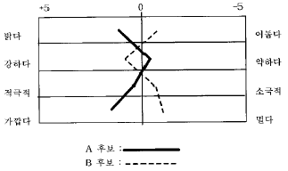
- 서스톤 척도(Thurston Scale)
- 리커트 척도(Likert Scale)
- 거트만 척도(Guttman Scale)
- 의미분화척도(Semantic Differential Scale)
(정답률: 67%)

2. 자료수집방법 중 조사자가 미완성의 문장을 제시하면 응답자가 이 문장을 완성시키는 방법은?
- 투사법
- 면접법
- 관찰법
- 내용분석법
(정답률: 70%)
3. 평정하여야 할 특징이 두 가지 이상일 때, 평정자가 한가지 특성에 대하여 강력한 인상을 가지게 되어 다른 특징에 대해서도 비슷한 평가를 내리려는 성향은?
- 후광효과(halo effect)
- 관용의 오류
- 중간화 경향
- 단일화 경향
(정답률: 62%)
4. 관찰된 현상의 경험적인 속성에 대해 일정한 규칙에 따라 수치를 부여하는 것은?
- 측정(measurement)
- 척도(scale)
- 지표(indicator)
- 변수(variable)
(정답률: 50%)
5. 거트만척도 작성에서 총 15명의 응답자가 총 7개 질문항목의 척도화 가능성을 알아본 결과 일관성 없는 응답을 한 총 착오점수 (error scores)가 5였다. 재생가능계수(coefficient of reproducibility=CR)의 값은?
- 0.33
- 0.57
- 0.80
- 0.95
(정답률: 알수없음)
6. 거트만 척도를 활용하여 약물중독의 정도를 측정하는 척도를 구성하고자 하였다. 먼저 술, 대마초, 필로폰의 순으로 약물중독정도가 심하다고 가정하고 각각에 대해 사용여부를 물었다(사용시 +, 미사용시 -). 다음 응답유형 가운데 척도적 구조에 위배되는 오류형(혼합유형)은 어느 것인가?
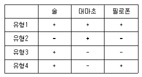
- 3, 4
- 2, 4
- 2, 3
- 1, 4
(정답률: 알수없음)
7. 질문문항의 배열로 적합하지 않은 것은?
- 시작하는 질문은 응답자의 흥미를 유발하는 것으로 쉽게 대답할 수 있는 것으로 한다.
- 개인의 사생활과 같이 민감한 질문은 가급적 뒤로 돌린다.
- 특수한 것을 먼저 묻고, 일반적인 것을 그 다음에 질문한다.
- 논리적인 순서에 따라 배열함으로써 응답자 자신도 조사의 의미를 찾을 수 있도록 한다.
(정답률: 70%)
8. 면접조사에서 질문의 일반적 원칙에 대한 설명 중 틀린 것은?
- 유도하거나 시사하는 일이 없도록 한다.
- 면접의 흐름을 순탄하게 하기 위하여 단계적 이행을 잘 해 나가야 한다.
- 질문지에서 중요한 것부터 차례로 질문해 나간다.
- 모든 문항은 질문지에 적혀 있는 그대로 물어야 한다.
(정답률: 58%)
9. 다음 중 시청각 도구를 사용할 수 있지만, 조사비용이 많이 드는 것이 단점인 자료수집 방법은?
- 면접조사
- 전화조사
- 우편조사
- 인터넷조사
(정답률: 알수없음)
10. 우리는 사회조사를 실시할 때 종종 여러 문항으로 이루어진 척도를 만든다. 다음 중 척도를 만드는 이유가 아닌 것은?
- 척도는 측정의 신뢰도를 높여주기 때문이다.
- 단일문항의 불안정성을 줄일 수 있기 때문이다.
- 한 문항으로 한 개념을 쉽게 측정할 수 없는 경우가 많기 때문이다.
- 일반적으로 단일문항으로 측정하는 것이 여러 문항으로 측정하는 것보다 측정오차가 더 작기 때문이다.
(정답률: 알수없음)
11. 종단조사(longitudinal study)에 관한 설명으로 틀린 것은?
- 주로 변화분석에 의해서 분석된다.
- 추세분석에 이용할 수 있다.
- 패널조사란 특정조사 대상자들을 선정하여 단 한차례만 조사를 실시하는 방법이다.
- 변화분석은 변화가 일어난 원인을 분석하는 기법이다.
(정답률: 67%)
12. 우편조사의 응답률에 영향을 미치는 요인에 대한 설명 중 틀린 것은?
- 대상자의 범위가 극히 제한된 동질집단의 경우 회수율이 높다.
- 질문지의 양식이나 우송방법에 따라 다를 수 있다.
- 응답에 대한 동기부여가 중요하다.
- 연구주관기관과 지원단체의 성격이 중요하다.
(정답률: 알수없음)
13. 측정대상들의 편견에 의해서 측정에 오류가 발생하는 것이 아닌 것은?
- 고정반응
- 사회적 적절성 편견
- 문화적 차이 편견
- 무작위적 오류
(정답률: 알수없음)
14. 다음 중 일반적 연구수행 절차로 가장 적절한 것은?
- 문제확인-문헌검토-가설설정-설문작성-분석 및 논의
- 문제확인-가설설정-문헌검토-설문작성-분석 및 논의
- 문제확인-문헌검토-설문작성-가설설정-분석 및 논의
- 문제확인-가설설정-설문작성-문헌검토-분석 및 논의
(정답률: 알수없음)
15. 입지전적으로 기업을 성장시켜 성공한 한 명의 기업가에 대해 성공의 비결이 무엇인지를 알아보기 위하여 그 사람에 대해 집중적인 연구를 하는 방법은?
- 사례연구법
- 상관연구법
- 실험법
- 내용분석법
(정답률: 알수없음)
16. 측정수준에 따른 척도에 대한 설명으로 틀린 것은?
- 명목척도는 성별과 종교처럼 분류적인 개념만을 내포한다.
- 서열척도는 특정한 성격을 갖는 정도에 따라 범주를 서열화한다.
- 등간척도는 IQ처럼 대상 자체가 갖는 속성의 실제값을 나타낸다.
- 비율척도는 실업률과 성비처럼 0이라는 절대적 의미를 갖는 값이 존재한다.
(정답률: 73%)
17. 다음 이분변수(dichotomous variable)의 성격과 용도에 대한 설명으로 틀린 것은?
- 특정한 속성의 유무에 따라 분류한 변수이다.
- 이원적(binary) 속성을 가진 사회현상을 측정하는데 사용된다.
- 다범주적인 속성을 가진 변수를 이분변수로 변환할 수 있다.
- 이분변수는 회귀분석에 사용할 수 없다.
(정답률: 37%)
18. 어느 제조업 공장에 근무하는 현장 사원들과 관리자들간에 유지되고 있는 사회적 관계의 특성을 규명하기 위해 참여관찰인 현장조사를 실시할 경우, 다음 중 이러한 연구의 장점이 아닌 것은?
- 조사과정의 유연성
- 조사결과의 신뢰성
- 가설도출의 탐색적 연구
- 조사비용의 저렴
(정답률: 50%)
19. 다음 중 결측자료(missing data)의 처리방법으로 가장 적절한 것은?
- 유사사례를 추출하여 그 사례에 기재된 내용을 대체해 사용한다.
- 결측된 변수의 평균값을 대체해 사용한다.
- 난수표에서 번호를 추출하여 그 점수를 대체해 사용한다.
- 결측자료가 50%이상이 된다하더라도 원래 수집된 사례수는 유지해야 하기 때문에 그대로 사용한다.
(정답률: 알수없음)
20. 유권자의 정치적 이념 성향을 측정하기 위해 다음 중 하나를 선택하도록 하였다. 무슨 척도를 사용한 것인가?
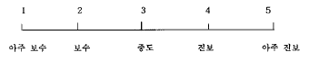
- 명목척도
- 서열척도
- 등간척도
- 비율척도
(정답률: 알수없음)
21. 계통표집에서 집단의 크기가 100만명이고 표본의 크기가 1000명이라면, 다음 중 어떤 것이 가장 적절한 표집방법 인가?
- 먼저 단순무작위로 1000명을 뽑아 그 중에서 편중된 표본은 제거하고, 그것을 대체하는 표본을 다시 뽑는다.
- 최초의 사람을 무작위로 선정한 후 매 1000번째 사람을 고른다.
- 모집단이 너무 크기 때문에 100만명을 1000개의 집락으로 나누어야 한다.
- 모집단을 1000개의 하위집단으로 나누고, 그 하위집단에서 1명씩 고르면 된다.
(정답률: 알수없음)
22. 반복조사에서 인위적으로 어떤 실험을 가하지 않더라도 사회현상이나 인간이 다같이 변화를 지속하는 효과는?
- 선별(選別)효과
- 실험효과
- 성숙효과
- 조사도구효과
(정답률: 67%)
23. "최근 텔레비전 프로그램에 등장하고 있는 폭력적 장면과 선정적 장면에 대해서 어떻게 생각하십니까?"라는 질문은 주로 어떤 오류를 범하고 있는가?
- 부적절한 언어의 사용
- 비윤리적 질문
- 전문용어의 사용
- 이중적 질문
(정답률: 59%)
24. 획득하고자 하는 정보의 내용을 대략 결정한 다음에 이루어져야할 질문지 작성과정으로 순서가 맞는 것은?
- 자료수집방법의 결정 -> 질문내용의 결정-> 질문형태의 결정-> 질문순서의 결정
- 질문형태의 결정-> 자료수집방법의 결정 -> 질문내용의 결정 -> 질문순서의 결정
- 질문내용의 결정-> 질문형태의 결정-> 질문순서의 결정 -> 자료수집방법의 결정
- 질문내용의 결정-> 질문순서의 결정 -> 질문형태의결정-> 자료수집방법의 결정
(정답률: 31%)
25. 집단구성원 상호간에 존재하는 사회적 거리의 강도를 측정하기 위해 개발된 척도는?
- 보가더스척도
- 소시오메트리
- 서스톤척도
- 리커트척도
(정답률: 79%)
26. 다음 중 사례조사에 해당되는 것은?
- 본 조사를 실행하기 앞서 먼저 시행한다.
- 조사의 범위를 한 지역 또는 한번의 현상에 국한시켜 연구하고자 하는 현상의 대표성을 유지시킨 채 결과를 도출하는 방법이다.
- 일정지역 또는 작은 sample을 추출하여 대표성을 유지시킨 채 사전에 진행하는 것이다.
- 조사의 타당도, 신뢰도를 측정해 보는 방법이다.
(정답률: 30%)
27. 다음 중 온라인조사의 문제점이 아닌 것은?
- 복수응답의 가능성
- 표본의 대표성
- 조사모집단의 정의문제
- 개인정보보호의 문제
(정답률: 알수없음)
28. 질문지의 초안을 작성한 후, 그 질문지를 통해 자료가 적절하게 수집될 수 있는지를 점검하기 위해 실시하는 조사를 무엇이라고 하는가?
- 전문가 조사
- 예비조사(pilot study)
- 사전검사(pre-test)
- 문헌조사
(정답률: 알수없음)
29. 다음 중 표본설계과정에 해당되지 않는 것은?
- 표본틀의 결정
- 조사연구 자금 확보
- 표집방법 및 표본크기 결정
- 모집단의 결정
(정답률: 77%)
30. 일정 시간간격을 두고 동일집단에 대해 반복적으로 자료를 수집하는 방법은?
- 패널조사
- 횡단적 조사
- 시계열조사
- 비교조사
(정답률: 70%)
2과목: 조사방법론 II
31. 다음 중 내적타당도 영향요인이 아닌 것은?
- 반작용효과
- 특정사건
- 사전검사
- 통계학적 회귀효과
(정답률: 0%)
32. 다음 ( )에 알맞은 것은?
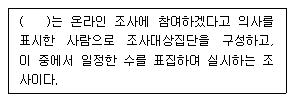
- 가입자조사
- 회원조사
- 방문자조사
- 전자우편조사
(정답률: 알수없음)
33. 다음 중 구성체 타당도(construct validity)를 위한 기법이 아닌 것은?
- 다중속성-다중측정 방법
- 요인분석
- 이론적 타당도
- 예측적 타당도
(정답률: 24%)
34. 폐쇄형 질문의 응답범주 작성원칙 중 맞는 것은?
- 범주의 수는 많을수록 좋다.
- 제시된 범주가 가능한 모든 응답범주를 다 포함해야한다.
- 관련된 현상 중 가장 중요한 것만 범주로 제시한다.
- 제시된 범주들 사이에 약간의 중복은 있어도 무방하다.
(정답률: 46%)
35. 표본틀(sampling frame)로 적합하지 않는 것은?
- 경제활동인구조사를 위한 전국인구센서스 조사구
- OO구의 빈곤층 실태조사를 위한 이 지역거주 생활보호대상자 명부
- 하류계층 생활실태파악을 위한 백화점카드 사용자 명단
- 징집대상자 파악을 위한 주민등록부
(정답률: 42%)
36. 조사자와 응답자의 친숙한 분위기(rapport) 형성이 상대적으로 중요하지 않는 자료수집방법은?
- 면접조사(face-to-face interview)
- 심층면접조사(in-depth interview)
- 집단면접조사(group interview)
- 집단조사(group questionnaire survey)
(정답률: 70%)
37. 한 연구자가 마약사용과 같은 사회적 일탈행위를 연구하기 위해, 마약사용자 한 사람을 알게 되어 조사를 실시하고, 이 사람을 통해 다른 마약사용자들을 알게 되어 조사를 실시하고, 또 이들을 통해 알게된 또 다른 마약사용자들에 대한 조사를 실시하였다. 이와 같이 조사대상자들로 부터 정보를 얻어 다른 조사대상자를 구하는 표집방법은?
- 눈덩이표집(snawball sampling)
- 의도적표집(purposive sampling)
- 할당표집(quota sampling)
- 임의표집(convenience sampling)
(정답률: 알수없음)
38. 다음 중 표집오차를 결정하는 요인이 아닌 것은?
- 분산의 정도
- 문항의 무응답
- 표본의 크기
- 표집방법
(정답률: 40%)
39. 척도구성 중 평정척도의 장점이 아닌 것은?
- 만들기 간편하다.
- 시간과 비용이 적게 든다.
- 적용의 범주가 넓다.
- 객관성이 유지될 수 있다.
(정답률: 42%)
40. 뒤르케임은 프로테스탄티즘이 자살행위와 깊은 관계를 가지고 있음을 보여주기 위해 특정지역을 분석단위로 조사하여 다음과 같은 결과를 얻었다. 이를 토대로 일반적으로 개신교 신도가 카톨릭 신도보다 자살을 할 성향이 저 높다고 해석한다면 이는 무슨 오류인가?
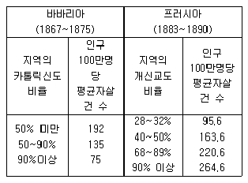
- 환원주의
- 생태학적 오류
- 측정 오류
- 개인주의적 오류
(정답률: 64%)
41. 피조사자의 개인별 차이를 무시함으로써 조사의 타당도가 낮아질 가능성이 있는 조사는?
- 면접조사
- 우편조사
- 집단조사
- 전화조사
(정답률: 알수없음)
42. 다음 중 개방형 질문(Open Question)에 대한 설명으로 틀린 것은?
- 탐색조사에서 유용하게 이용할 수 있다.
- 민감한 주제에 적합하다.
- 응답자에게 창의적인 자기표현의 기회를 줄 수 있다.
- 응답범주가 너무 많을 경우에 사용하면 좋다.
(정답률: 54%)
43. 다음 중 비확률표집방법으로서, 가설검정이나 모수추정 등 추리통계의 기법을 적용하는데 사용될 수 없는 표집방법은?
- 단순무작위표집
- 층화표집
- 유의표집
- 집락표집
(정답률: 50%)
44. 측정을 위해서는 대상의 속성을 적절히 대표할 수 있는 지표를 발견하여야 한다. 예를 들어 교육수준을 측정하기 위한 지표는 중졸, 고졸, 대졸 등의 최종학교 졸업수준 등을 들 수 있다. 이와 같은 지표의 구비조건이 아닌 것은?
- 절대성
- 타당성
- 신뢰성
- 확인의 용이성
(정답률: 알수없음)
45. 관찰의 유형에 관한 설명으로 틀린 것은?
- 관찰자의 참여여부에 따라 참여관찰, 비참여관찰이 있다.
- 관찰방법의 체계화 정도에 따라 구조화 관찰과 비구 조화 관찰이 있다.
- 관찰상황의 통제여부에 따라 통제관찰과 자연적 관찰이 있다.
- 관찰도구에 따라 직접관찰과 간접관찰이 있다.
(정답률: 알수없음)
46. "모든 사람은 죽는다. 소크라테스는 사람이다. 그러므로, 소크라테스는 죽는다."改이와 같이 일반적인 것으로부터 특수한 것을 추론해 내는 방법은?
- 귀납법
- 연역법
- 귀납법과 연역법
- 전환법
(정답률: 48%)
47. 측정결과 얻어진 자료에 내포되어 있는 정보가 가장 많은 척도는?
- 명목척도
- 서열척도
- 등간척도
- 비율척도
(정답률: 64%)
48. 집락표집(cluster sampling)에 대한 설명으로 틀린 것은?
- 모집단으로부터 집락을 무작위로 선정한 다음 이 집락으로부터 일정수의 요소를 표본으로 추출하는 방법
- 단순무작위추출이나 층화추출의 단점을 보완하기 위해서 사용되기 때문에 보다 과학적인 방법
- 모집단의 크기가 너무 크거나 층의 표본단위가 많아 목록을 작성하기 어려운 상황에 유용
- 모집단을 세분화한다는 점에서 층화추출과 유사
(정답률: 알수없음)
49. 면접조사와 비교하여 전화조사의 장점이 아닌 것은?
- 면접자의 영향을 통제할 수 있다.
- 표본오차의 통제에 유용하다.
- 조사에 소요되는 시간이 짧다.
- 비용이 적게 든다.
(정답률: 알수없음)
50. 설문지를 작성하여 사전조사를 할 때 옳은 설명은?
- 사전조사는 최소 1회 이상 실시하는 것이 좋다.
- 본조사의 응답자 크기와 비슷하게 실시하는 것이 좋다.
- 응답자의 대표성을 고려할 필요는 없다.
- 면접방법으로 조사하지 않는 것이 좋다.
(정답률: 40%)
51. 일반적인 우편조사의 특성에 해당되지 않는 것은?
- 회수율이 낮은 경우 표본의 대표성을 확보하기 어렵다.
- 응답자에 대한 익명성과 비밀유지에 대한 확신을 부여하기 쉽다.
- 표본으로 추출된 대상자가 직접 응답하지 않았을 경우 확인하기 어렵다.
- 통상 조사에 필요한 시간이 전화조사보다는 길지만 면접조사보다는 짧다.
(정답률: 58%)
52. 단순무작위표집에 대한 설명으로 틀린 것은?
- 표본이 모집단으로부터 추출된다.
- 모든 요소가 대등한 확률을 가지고 추출된다.
- 구성요소가 바로 표집단위가 되는 것은 아니다.
- 표본확보의 가장 보편적인 방법은 난수표를 사용하는 것이다.
(정답률: 43%)
53. 다음은 무엇에 관한 설명인가?
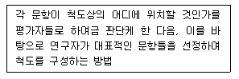
- 거트만척도(Guttman scale)
- 서스톤척도(Thurston scale)
- 리커트척도(Likert scale)
- 의미분화척도(semantic differential scale)
(정답률: 46%)
54. 사용하고 있는 측정도구의 측정값과 기준이 되는 측정도구의 측정값과의 상관관계로 측정되는 타당도는?
- 구성체타당도
- 액면타당도
- 기준관련타당도
- 다차원타당도
(정답률: 알수없음)
55. 다음 중 서열척도로 측정할 수 있는 변수로 구성된 것은?
- 행복감, 교회 참석 정도, 지역사회 참여도
- 종교 유무, 소득, 직무 만족도
- 직업 신분, 인종, 대통령 지지도
- 학력, 연령, 정당 가입여부
(정답률: 55%)
56. 척도는 응답자, 자극 또는 응답자와 자극을 동시에 측정 하려고 하는가에 따라서 여러 방식이 있다. 이 중 응답자와 자극을 동시에 측정하는 척도는?
- 서스톤척도(Thurston scle)
- 리커트척도(Likert scale)
- 거트만척도(Guttman scale)
- 의미분화척도(semantic differential scale)
(정답률: 55%)
57. 다음 ( )에 각각 알맞은 것은?
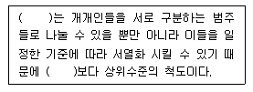
- 명목척도 - 서열척도
- 등간척도 - 비율척도
- 명목척도 - 비율척도
- 서열척도 - 명목척도
(정답률: 50%)
58. 어떤 연구자가 2001년도 사회과학대학 입학생들을 학번순서대로 표본을 표집하여 남학생과 여학생 각각 100명씩을 선정하였다. 이 표집방법은 무엇인가?
- 단순무작위표집법
- 계통표집법
- 눈덩이표집법
- 할당표집법
(정답률: 20%)
59. 질문문항 상호간에 어느 정도 일관성을 가지고 있는지를 측정하기 위해 계산하는 통계값은?
- 스피어만 로우
- 파이
- 람다
- 크론바하 알파
(정답률: 67%)
60. 다음 중 코호트 연구(cohort study)의 의미를 가장 잘 설명한 것은?
- 시점조사를 통하여 여러 변수의 차이를 분석할 때 적용하는 연구설계방법
- 다양한 특성을 지니는 인구 집단 속에서 특정사건이 시간에 따라 발생되는 변화를 조사하고자 할 때 사용하는 연구설계방법
- 동일한 특성을 가진 집단에서 발생되는 특정사건의 변화를 시간의 경과에 따라 조사하기 위한 연구설계 방법
- 본 조사(main study) 이전에 특정사건의 빈도를 미리 예측하기 위한 연구설계방법
(정답률: 46%)
3과목: 사회통계
61. 아래와 같이 집단별로 구분된 자료가 있다. 이 자료의 중앙값이 포함된 구간은?
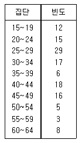
- 25∼29
- 30∼34
- 35∼39
- 40∼44
(정답률: 알수없음)
62. 확률밀도함수가 f(x)인 연속형 확률변수 X에 대한 확률분포의 특성으로 틀린 것은?
- P(X=x)=1
- P(a ≤ X ≤ b)는 구간(a, b)사이에서 확률밀도함수 f(x)와 X축 사이의 면적이다.
- f(x) ≥ 0
- P(-∞ ≤ X ≤ ∞ )=1
(정답률: 37%)
63. 크기가 10인 표본으로부터 얻은 자료(x1, y1), (x2, y2), ....(x10, y10)에서 얻은 단순선형회귀식의 기울기가 0인지 아닌지를 검정할 때, 사용되는 t분포의 자유도는 얼마 인가?
- 19
- 18
- 9
- 8
(정답률: 15%)
64. 설명변수(Xi)와 반응변수(Yi)사이에 단순회귀모형을 가정 할 때, 회귀직선의 절편에 대한 추정값은 얼마인가?
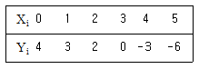
- 1
- 3
- 5
- 7
(정답률: 알수없음)
65. 어떤 철물점에서 10가지 길이의 못을 팔고 있다. 단, 못길이(단위:cm)는 각각 2.5, 3.0, 3.5, 4.0, 4.5, 5.0, 5.5, 6.0, 6.5, 7.0 이다. 만약, 현재 남아 있는 못 가운데 10%는 4.0cm인 못이고, 15%는 5.0cm인 못이며, 53%는 5.5cm인 못이라면 못 길이의 최빈수는?
- 4.5
- 5.0
- 5.5
- 6.0
(정답률: 알수없음)
66. 10개의 관측자료를 사용하여 다음과 같은 회귀식을 구하였다. X1이 5증가하고 X2가 6증가 할 경우 Y의 증가량은?
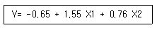
- 11.66
- 12.31
- 21.88
- 22.53
(정답률: 10%)
67. 모집단의 평균을 μ 라 하고 표본평균을
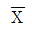
라 하면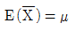
의 의미는?- 무작위 표본의 평균은 모집단 평균에 대한 불편 추정량(unbiased estimator)이다.
- 무작위 표본의 평균은 모집단 평균에 대한 일치 추정량(consistent estimator)이다.
- 무작위 표본의 기대치는 모집단 분산에 대한 불편추정량이다.
- 무작위 표본의 기대치는 모집단 분산에 대한 일치추정량이다.
(정답률: 알수없음)
68. 어느 공정에서 생산되는 제품의 약 40%가 불량품이라 한다. 이 공정의 제품 4개를 임의로 추출했을 때, 4개가 불량품일 확률은?
- 16/125
- 64/625
- 62/625
- 16/625
(정답률: 28%)
69. 전국의 400가구를 대상으로 월평균 가구 총수입을 조사한 결과 평균 200만원이라는 응답이 나왔다. 모집단의 표준 편차가 40만원으로 알려져 있을 때, 우리나라 가구의 한달 평균 총 수입을의 95% 신뢰구간으로 구하면 얼마인가? (단, z0.⑤=1.64, z0.025=1.96이고, 단위는 만원으로 계산하기로 한다.)
- (198.355, 201.645)
- (196.71, 203.29)
- (198.04, 201.96)
- (196.08, 203.92)
(정답률: 40%)
70. 아래 확률분포에서 기대값은?
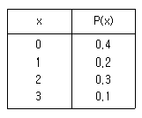
- 0.8
- 1.0
- 1.1
- 1.2
(정답률: 39%)
71. 25%, 50%, 75%에 해당하는 3개의 사분위수와 최대값 및 최소값을 이용하여 두 개 이상의 집단에 대한 자료의 분포상태를 시각적으로 잘 보여줄 수 있는 그림표는?
- 히스토그램(Histogram)
- 원 그림표(Phi-Chart, Circular-chart)
- 줄기와 잎 그림표(Stem and leaf display)
- 상자와 수염 그림표(Box-and-Whisker plot)
(정답률: 알수없음)
72. 다음 분산분석표에서 결정계수(R2)는?
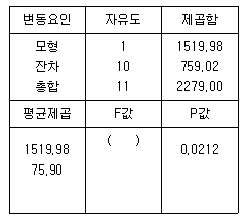
- 0.67
- 0.49
- 0.09
- 0.⑤
(정답률: 25%)
73. 다음의 상황에 알맞은 검정방법은?
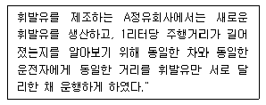
- 독립표본 t-검정
- 대응표본 t-검정
- X2-검정
- F -검정
(정답률: 알수없음)
74. 어떤 대학 사회학과 학생들의 통계학 성적분포가 근사적으로 N(70,102)을 따른다고 한다. 50점 이하인 학생에게 F학점을 준다고 할때 F학점을 받게될 학생들의 비율을 구할 수 있는 것은?
- P(Z≤-1)
- P(Z≤1)
- P(Z≤-2)
- P(Z≤2)
(정답률: 알수없음)
75. 평균이 10이고 분산이 4인 정규분포를 따르는 모집단으로부터 크기가 4인 표본을 추출하였다. 이때 표본평균의 표준편차는 얼마인가?
- 1
- 2
- 4
- 10
(정답률: 36%)
76. 4개 중 하나를 선택하는 선다형 문제가 20문항이 있고 각 문항별 배점은 5점이다. 시험 결과 60점 미만은 불합격 처리 된다고 한다. 이 시험에서 랜덤하게 답을 써넣은 경우에 합격할 확률을 나타내는 식은?
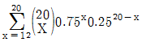
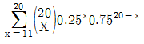
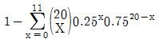
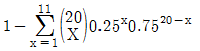
(정답률: 46%)
77. 다음 표의 x, y에 대한 상관계수 설명 중 맞는 것은?
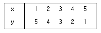
- 완전 양의 상관관계
- 상관이 없다
- 강한 양의 상관관계
- 완전 음의 상관관계
(정답률: 알수없음)
78. A생수공장에서 생산된 생수의 평균용량은 360㎖이고, 이 모집단의 분산은 50일 때 n=10으로 하여 표본을 뽑으면 그 표본들의 평균의 기대값과 분산은 얼마인가?
- 기대값 : 250, 분산 : 5
- 기대값 : 360, 분산 : 5
- 기대값 : 250, 분산 : 10
- 기대값 : 360, 분산 : 10
(정답률: 73%)
79. P(A)=0.4, P(B)=0.2, P(B│A)=0.4일 때 P(A│B)는?
- 0.4
- 0.5
- 0.6
- 0.8
(정답률: 37%)
80. 통계적 가설검증을 실시할 때 유의 수준과 오류의 발생확률과의 관계에 대해서 잘못 설명한 것은?
- 가설검증에서 유의 수준이란 제1종 오류를 범할 최대 허용오차이다.
- 유의 수준을 감소시키면(예를 들어 0.⑤에서 0.01로) 제2종 오류의 확률 역시 감소한다.
- 제2종 오류의 확률, 즉 거짓인 귀무가설을 받아들일 확률은 쉽게 결정할 수 없다.
- 유의 수준은 표본의 결과가 모집단의 성질을 반영하는 것이 아니라 표본의 특성에 따라 나타날 확률의 범위이다.
(정답률: 알수없음)
81. 확률변수 X는 이항분포 B(n, p)를 따른다고 하자. n=10, p=0.5 일 때, 확률변수 X의 평균과 분산은?
- 평균 2.5, 분산 5
- 평균 2.5, 분산 2.5
- 평균 5, 분산 5
- 평균 5, 분산 2.5
(정답률: 알수없음)
82. 다음 중 단순회귀모형에서 오차항에 부여되는 가정이 아닌 것은?
- 등분산성
- 정규성
- 최소성
- 독립성
(정답률: 알수없음)
83. A회사의 종업원은 500명인데 이들의 임금이 평균 1,350,000원, 표준편차 200,000원인 정규분포를 이룬다면, 이중 비복원추출로 100명을 표본으로 뽑을 때
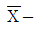
분포의 평균과 표준편차는?- 평균 : 1,350,000원 표준편차 : 17,906원
- 평균 : 1,450,000원 표준편차 : 17,906원
- 평균 : 1,350,000원 표준편차 : 16,906원
- 평균 : 1,450,000원 표준편차 : 16,906원
(정답률: 19%)
84. 5개의 자료 값 10, 20, 30, 40, 50 의 특성에 대하여 바르게 설명한 것은?
- 평균 30, 중앙값 30
- 평균 35, 중앙값 40
- 평균 30, 최빈값 50
- 평균 25, 최빈값 10
(정답률: 50%)
85. 반복이 없는 이원배치법모형이 아래와 같을 때 다음 중 설명이 틀린 것은?
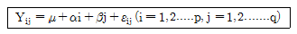
- 총 실험횟수는 pq이다.
- 두 인자가 모수인 경우를 난괴법이라고 한다.
- 반응변수는 일반적으로 정규분포를 따른다고 가정하고 이의 분산은 오차항의 분산과 같다.
- 두 인자의 효과를 알아보는 방법으로 분산분석을 이용한 F-검정을 이용한다.
(정답률: 알수없음)
86. 일원분산분석을 시행하였다. 처리는 모두 5개이며, 각 처리당 6회씩 반복 실험을 하였다. 결정계수의 값이 0.6, 처리평균제곱의 값이 300이라면 오차제곱합의 값은 얼마인가?
- 800
- 900
- 1600
- 1800
(정답률: 알수없음)
87. 통계분석을 통해 다음과 같은 자료를 얻을 수 있었다. 어떤 약물의 효과를 검증하기 위해 서로 관련된 두집단, A집단(통제집단)과 B집단(검증집단)간에 t-검증을 했다. 자유도는 9였고, 양방검증을 했으며, 유의수준을 0.⑤로 했을 경우, 기각역에 해당하는 t- 값은 2.262였으나, 이 실험에서 관찰된 t-값은 2.560이었다. 이 자료로부터 얻을 수 있는 결론은?
- 그 약은 아무런 효과를 나타내지 않았다.
- 집단-B가 집단-A 보다 더 우수했다.
- 두 집단간에는 유의한 차이가 있었다.
- 두 집단간에는 차이가 있었으나 유의한 차이는 나타내지 않았다.
(정답률: 알수없음)
88. 유의수준 α 하에서 단측 가설 검정을 시행하고자 한다. 다음 중 귀무가설(H0)을 기각하는 유의확률 p-값의 조건으로 옳은 것은?
- α ＞ p-값
- α ＜ p-값
- 1-α ＞ p-값
- 1-α ＜ p-값
(정답률: 47%)
89. X가 이항분포 B(n, p)를 따른다고 할 때 p의 불편추정량 인
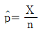
의 분산은 어느 것인가?- np(1-p)
- p(1-p)/n
- np
- p(1-p)
(정답률: 24%)
90. 표본평균에 대한 설명으로 틀린 것은?
- 표본의 중심위치를 나타내는 대표값이다.
- 이상치에 크게 영향을 받는 단점이 있다.
- 표본의 몇몇 자료값이 모평균으로부터 한쪽 방향으로 멀리 떨어지는 현상이 발생하는 자료에서도 좋은 추정량이다.
- 이상치에 민감한 단점을 보완하기 위하여 절사평균을 쓴다.
(정답률: 47%)
91. 비대칭도(skewness)에 대한 설명으로 틀린 것은?
- 비대칭도값이 1이면 좌우대칭형 분포를 나타낸다.
- 비대칭도의 부호는 관측값 분포의 꼬리방향을 나타낸다.
- 비대칭도는 대칭성 혹은 비대칭성을 측정하는 통계수치이다.
- 비대칭도값이 음수이면 관측값들이 주로 오른쪽에 모여 있어 왼쪽으로 꼬리를 길게 늘어뜨린 모양을 나타낸다.
(정답률: 40%)
92. 한 개의 동전을 연속적으로 10번 던지는 실험에서 확률변수 X를 표면이 나온 개수로 정의하면 확률변수 X의 평균은?
- 0
- 1
- 5
- 10
(정답률: 알수없음)
93. 다음 중 이산형 변수(discrete variables)의 변이(variation)를 측정해 주는 것은?
- 다양성 지수(Index of Diversity)
- 범위(range)
- 분산(variance)
- 표준편차(standard deviation)
(정답률: 알수없음)
94. 총선을 앞두고 한 지역구의 유권자 400명을 대상으로 조사한 결과 A후보의 지지율은 30.5%, B후보의 지지율은 34.8%로 나왔다. 자료에 따르면 이번 조사는 95% 신뢰수준에서 오차한계가 ± 5%라고 하였다. 이 때 결과의 해석으로 옳은 것은?
- 실제 선거에서는 A후보가 앞설수도 있다.
- A후보는 지지율이 낮으므로 포기하는 편이 낫다.
- B후보가 지지율이 높으므로 당선 가능성이 높다.
- 500명을 대상으로 조사한다면 오차한계는 ± 5%보다 크게 된다.
(정답률: 알수없음)
95. K라는 양궁선수는 화살을 쏘았을 때 과녁의 중심에 맞출 확률이 0.6이라고 한다. 이 선수가 총 7번 화살을 쏜다면 과녁의 중심에 평균 몇 회 맞추는가?
- 6.00
- 8.57
- 1.68
- 4.20
(정답률: 알수없음)
96. n개의 범주로 된 변수를 더미변수로 만들어 회귀분석에 이용할 경우 몇 개의 더미변수가 회귀분석모델에 포함되어야 하는가?
- n
- n-1
- n-2
- n-3
(정답률: 67%)
97. 다음의 가상의 자료를 이용하여 단순선형회귀모형을 추정하면?
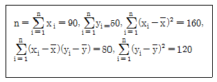
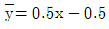
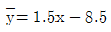
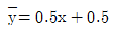
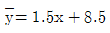
(정답률: 17%)
98. 모평균 μ 의 구간추정치를 구할 경우 95% 신뢰수준(confidence level)을 갖는 모평균 μ 의 신뢰구간이 100± 5라고 할 때 신뢰수준 95%의 의미는?
- 구간추정치가 맞을 확률
- 모평균이 100± 5내에 있을 확률
- 모평균과 구간추정치가 95% 같다는 뜻
- 같은 방법으로 여러 번 신뢰구간을 만들 경우 평균적으로 100개 중에서 95개는 모평균을 포함한다는 뜻
(정답률: 알수없음)
99. 변수 x의 평균을 x, 표준편차를 s 라고 할 때, 평균이 0이고 분산이 1이 되는 표준화점수를 구하는 방법은?
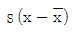
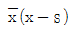
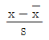
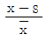
(정답률: 알수없음)
100. Y|X=α+β X+ε, ε~N(0,σ2)의 회귀식에서 회귀계수α, β 의 추정량이 다음과 같다.
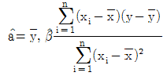
이때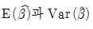
의 값은? (단,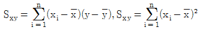
)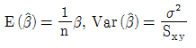
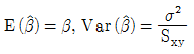
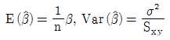
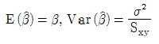
(정답률: 알수없음)